공개된 거래 기록으로 봇의 전략을 거꾸로 읽어요
영상은 숫자 하나로 시작해요. 왼쪽 위의 111은 '하루도 손실 없이 이어진 수익일'이고, 아래 그래프는 11월부터 2월까지 쉬지 않고 올라가요. 오른쪽 위에는 폴리마켓의 '0.5초 지연' 스위치가 켜져 있어요. 이 스위치가 꺼지면서 이 봇의 수익이 끊긴다는 게 영상의 첫 번째 이야기예요.
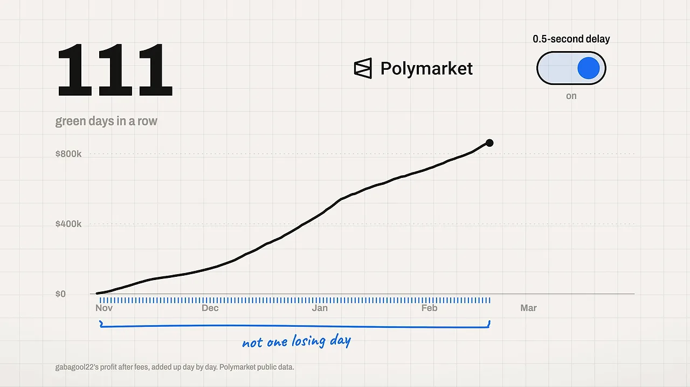
발표자는 이 봇을 포함해 폴리마켓에서 가장 많이 번 봇 세 개를 '세 왕'이라고 불러요. 카드 아래 작은 글씨가 각 봇의 방식이에요. 0x8dxd는 속도 거래(speed trade), coinman2는 옵션 가격 계산(options pricing), gabagool22는 짝 거래(pair trade)예요. 세 봇이 번 돈은 합쳐서 400만 달러가 넘어요.
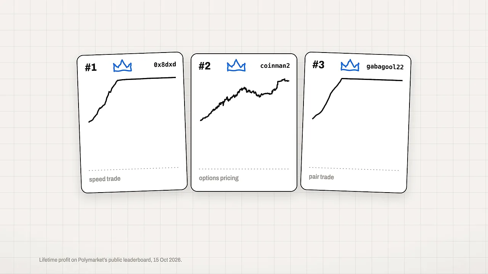
폴리마켓은 어떤 곳인가요
폴리마켓은 예/아니요 결과에 돈을 거는 예측시장이에요. 왼쪽 카드처럼 '누가 선거에서 이길까', '챔피언스리그는 누가 우승할까' 같은 질문이 올라와요. 봇에게 가장 중요한 건 파란 원 안의 '비트코인이 다음 15분 동안 오를까 내릴까' 시장이에요. 맞히면 1달러를 받고, 틀리면 한 푼도 못 받아요. 봇은 이런 내기를 사람 대신 하루 수천 번 자동으로 걸어 주는 프로그램이에요.
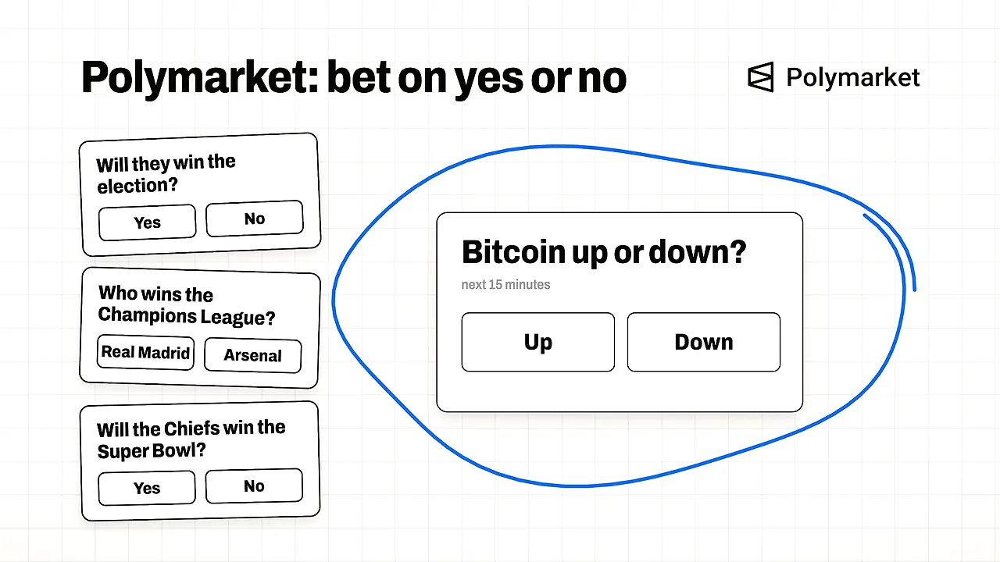
코드는 못 봐도 행동은 보여요
폴리마켓은 블록체인 위에 만들어져서 모든 거래가 누구나 볼 수 있게 남아요. 봇의 코드는 볼 수 없지만, 언제 어느 쪽을 몇 주, 얼마에 샀는지는 다 보여요. 발표자는 이 행동 기록으로 전략을 거꾸로 알아내는 리버스 엔지니어링을 하려고 했어요. 그런데 gabagool22 한 계정의 거래만 1,287만 건이 넘었어요. 세 봇을 합치면 약 1,800만 건이라 스프레드시트로 볼 수 있는 양이 아니었어요.
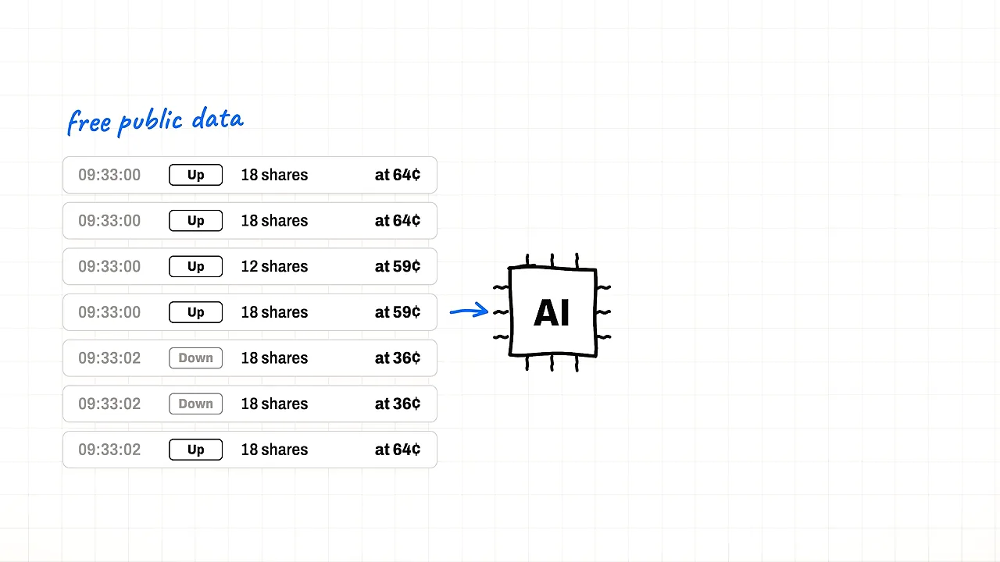
그래서 발표자는 Claude에게 원하는 것을 설명하고, 하룻밤 사이에 'Bot X-Ray'라는 분석 도구를 만들게 했어요. 발표자는 코드를 쓸 줄 모른다고 말해요. 아래 화면은 0x8dxd를 넣었을 때의 첫 화면이에요. 제목 줄에 '217만 달러를 벌고 2026년 3월 25일에 멈췄다'고 요약하고, 그래프 위에 수수료 추가, 지연 제거, 수수료 인상 시점을 파란 선으로 표시해요. 위쪽 탭에는 '무엇을 하나', '실력인가 운인가', '아직 통하나'가 차례로 있어요.
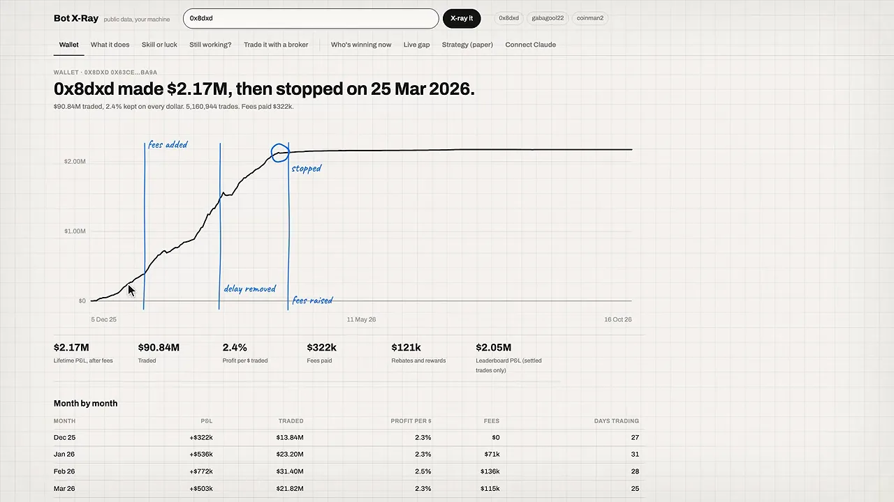
봇마다 던지는 세 가지 질문
Bot X-Ray는 분석하는 봇마다 같은 질문 세 개를 던져요. 이 세 질문이 영상 나머지 부분의 뼈대예요.
- What does it do? — 이 봇은 실제로 무엇을 하나요?
- Skill or luck? — 동전 던지기 같은 운인가요, 실력인가요?
- Does it still work? — 폴리마켓이 설정을 바꾼 뒤에도 통하나요?
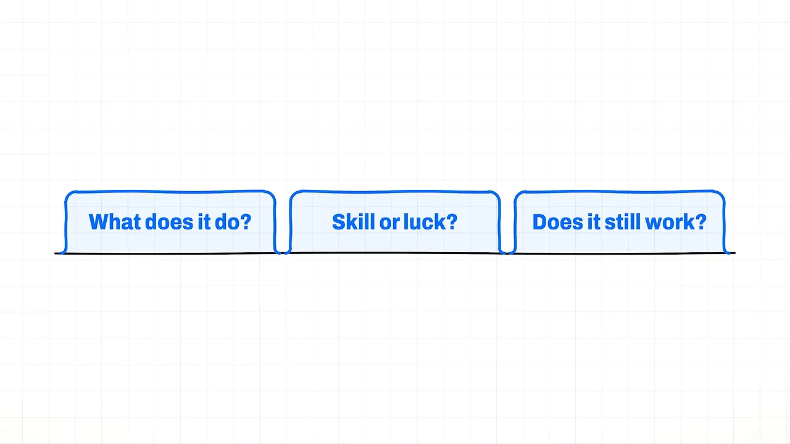
gabagool22: 두 표를 합쳐 1달러보다 싸게 사기
15분 시장에는 '오른다(Up)'와 '내린다(Down)' 두 표가 있어요. 아래 화면에서는 Up이 52센트, Down이 49센트예요. 둘 중 하나는 반드시 1달러가 되고, 나머지는 0이 돼요. 그러니 표 가격은 시장이 그 결과를 몇 퍼센트로 보는지와 같아요.
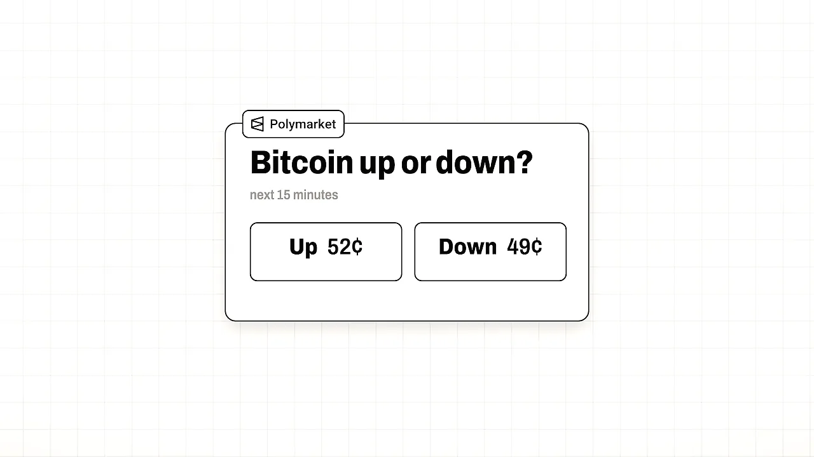
둘 다 사는데 어떻게 벌까요
gabagool22는 같은 시장에서 Up과 Down을 둘 다 샀어요. 발표자는 이걸 표가 딱 두 장뿐인 추첨에 비유해요. 두 장을 다 가지면 당첨표는 반드시 내 손에 있으니 1달러를 받아요. 결국 수익은 두 표를 얼마에 샀느냐로만 정해져요. 아래 그림이 세 가지 경우예요.
비결은 인내였어요. 두 표의 합이 1달러 아래로 내려갈 때만 샀고, 그렇지 않으면 기다렸어요. 화면의 시계가 'waits'에서 'now'로 바뀌는 게 그 뜻이에요. 한 번에 2센트씩, 이걸 수십만, 수백만 번 반복해서 하루 5,000~12,000달러를 벌었어요.
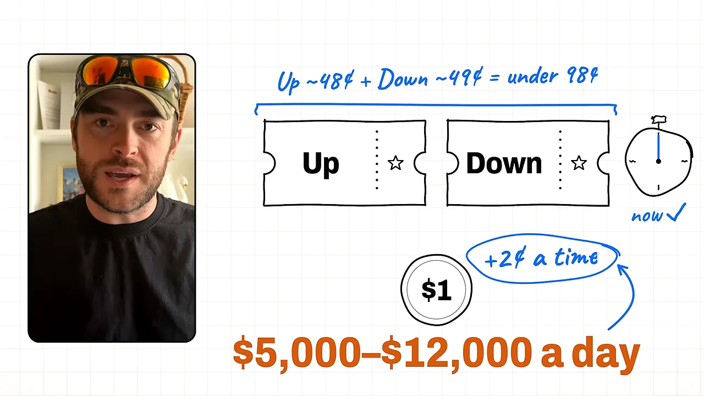
실력인가요, 운인가요
처음에는 111일 연속이라고 했지만, 실제로는 113일 연속 수익이었어요. 아래 Bot X-Ray의 '실력인가 운인가' 탭 맨 위 숫자 1 in 1.0 × 1034는 동전을 던져 113일 내내 수익이 날 확률이에요. 파란 손글씨 메모는 '영국 로또 1등에 네 번 연속 당첨되는 것보다 드물다'는 뜻이에요. 막대그래프의 일별 수익은 2025년 10월 30일부터 거의 매일 0 위에 있어요.
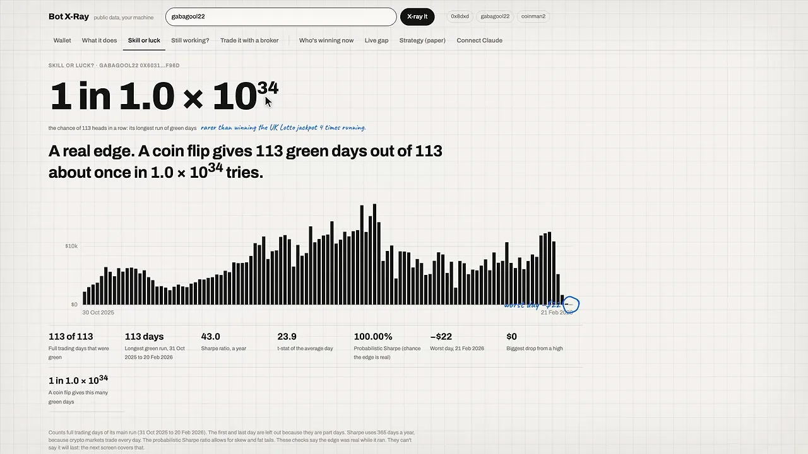
지금도 통하나요
아니요. 아래 그래프에는 세로선이 두 개 있어요. 1월 5일 '수수료 추가', 2월 18일쯤 '0.5초 지연 제거'예요. 지연이 사라진 뒤에도 이틀은 벌었지만, 2월 21일부터 그래프가 평평해져요. 발표자는 이 봇이 2센트 차이를 찾는 데 쓴 게 바이낸스 가격이 폴리마켓에 반영되기까지의 시차였고, 폴리마켓이 그 설정을 바꾸면서 전략이 끝났다고 설명해요.
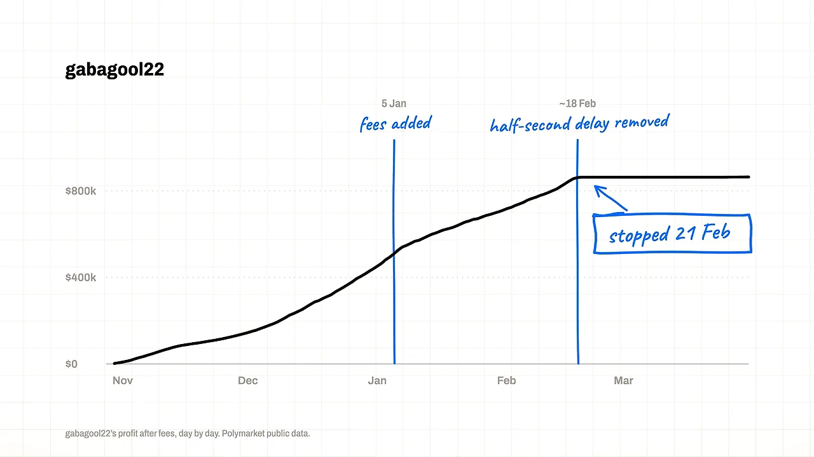
0x8dxd: 바이낸스보다 몇 초 늦은 가격 노리기
두 번째 왕은 0x8dxd예요. 세 봇 중 가장 많이 번 봇으로, 약 110일 동안 200만 달러 넘게 벌었어요. 발표자는 gabagool22의 111일과 기간이 거의 같다는 점에 먼저 눈을 둬요. 화면에는 두 숫자 사이에 '같지 않다(≠)'는 기호와 '조금 다르다(slightly d…)'는 손글씨가 있어요. 같은 틈을 노렸지만 방식은 조금 달랐다는 뜻이에요.
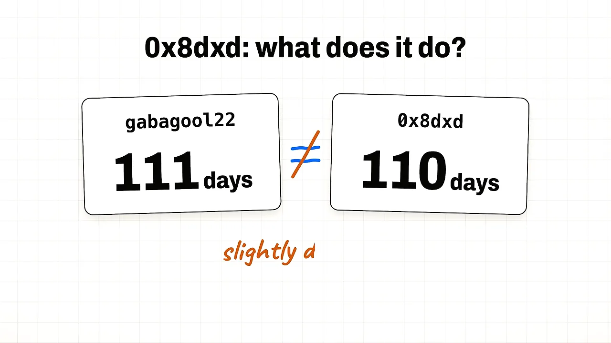
바이낸스가 움직이면 10초 안에 따라 샀어요
발표자는 Bot X-Ray로 바이낸스의 비트코인 가격 움직임과 0x8dxd의 거래를 초 단위로 나란히 놓았어요. 그러자 패턴이 보였어요. 바이낸스에서 비트코인이 움직이고 나서 10초 안에 이 봇이 산 것의 79%가 그 움직임과 같은 방향이었어요. 아래 원그래프의 아래쪽 점선이 동전 던지기(50%) 기준선이에요. 오른쪽 그래프는 가격이 뛴 직후 10초 구간에 매수(파란 삼각형)가 몰린 모습이에요.
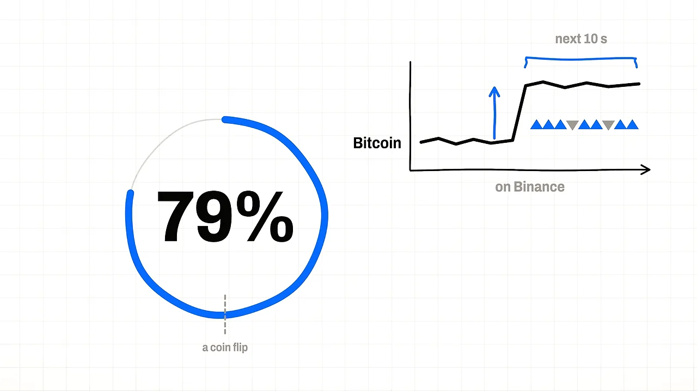
이유는 폴리마켓 가격이 바이낸스보다 몇 초 늦게 따라온다는 데 있어요. 아래 그림에서 회색 선이 바이낸스, 파란 선이 폴리마켓이에요. 바이낸스가 먼저 계단을 올라가고, 폴리마켓은 '몇 초 늦게(a few seconds slow)' 따라가요. 봇은 그 사이에 폴리마켓에서 샀어요(그림의 'BUY'). 폴리마켓 쪽에서만 보면 이 봇은 미래를 맞히는 것처럼 보였어요. 실제로는 바이낸스에서 2초 먼저 움직임을 봤을 뿐이에요.
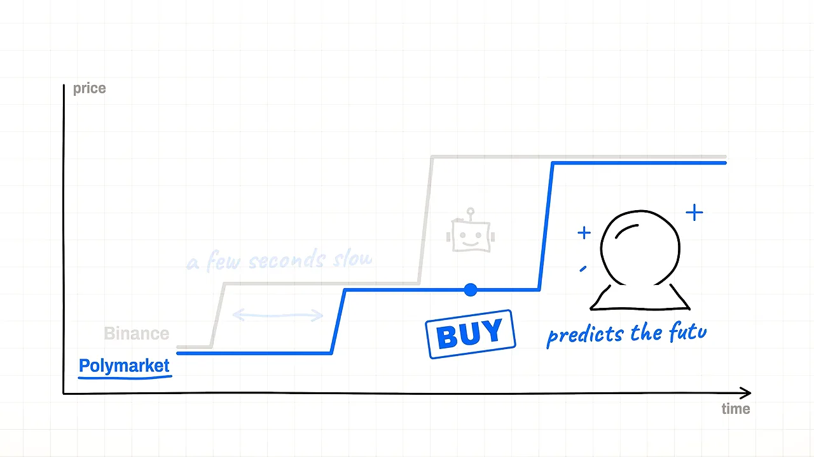
실력이었고, 지금은 멈췄어요
79%라는 비율은 운으로 보기에는 너무 높아서, 발표자는 실력이라고 판정해요. 하지만 이 시차를 폴리마켓이 없애면서 전략도 끝났다고 말해요. 아래 그래프는 3월 25일에 멈춘 뒤 평평하게 이어져요. 오른쪽 아래 메모는 '8월에 다시 돌아왔지만 1,468달러를 잃었다'는 뜻이에요.
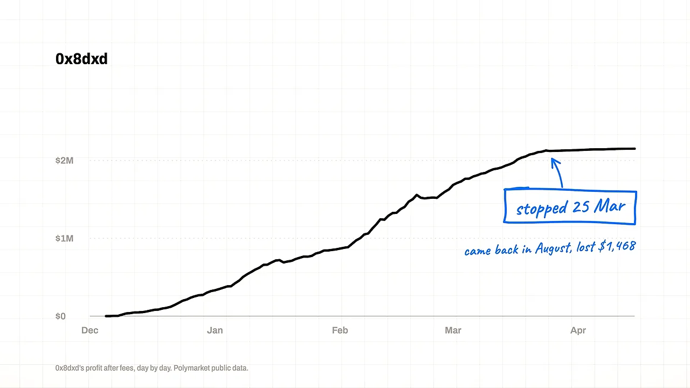
한 가지 짚어 둘 점이 있어요. 1번 섹션의 Bot X-Ray 화면을 다시 보면, 0x8dxd의 곡선은 '지연 제거(delay removed)' 선을 지난 뒤에도 한참 올라가요. 그리고 멈춘 지점에 그어진 선은 '수수료 인상(fees raised)'이에요. 발표자의 설명은 시차가 막혀서 끝났다는 것이지만, 도구 화면만 보면 수수료 인상과 함께 멈춘 것으로도 읽혀요.
coinman2: 옵션 수학으로 진짜 확률 계산하기
두 왕이 쓰러지자 발표자는 걱정했다고 해요. 시청자에게 쓸 만한 전략을 주겠다고 했는데, Bot X-Ray가 '전부 죽었거나 운이었다'는 것만 증명하는 것 같았거든요. 남은 건 X(옛 트위터)에서 다들 이야기하지만 아무도 방식을 모르던 백만 달러 봇, coinman2였어요.
사기만 하고 팔지 않아요
Bot X-Ray가 7주 동안 coinman2의 매수와 매도를 세어 보니 약 7,900번 거래했어요. 그런데 오른쪽 'Sells' 칸이 0이에요. 모든 거래가 매수였고, 한 번도 팔지 않았어요.
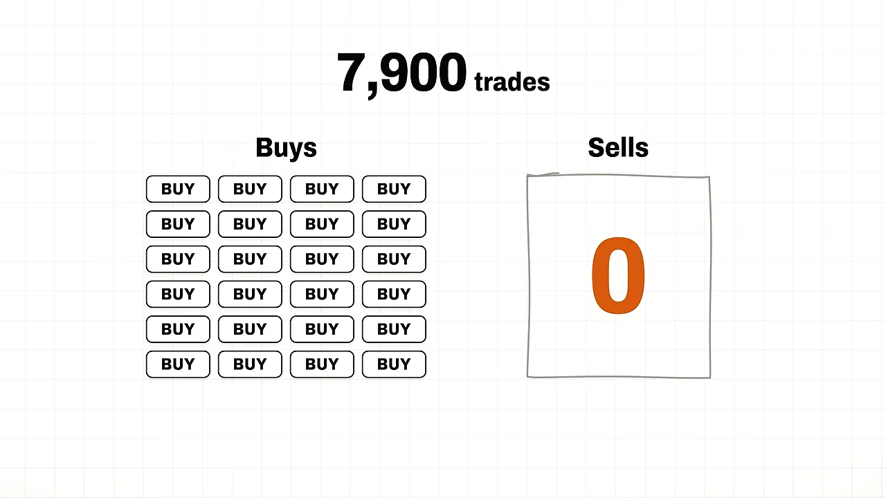
이 봇이 거는 시장은 15분짜리가 아니에요. '이더리움이 11월 말까지 2,500달러를 넘을까' 같은, 정해진 날짜에 가격 기준을 넘는지 묻는 시장이에요. Bot X-Ray의 '무엇을 하나' 탭 첫 문단이 이 봇을 이렇게 요약해요. '지금 가격과 평소 움직이는 폭으로 진짜 확률을 구하고, 너무 싸게 매겨진 쪽을 사서 끝까지 들고 간다.' 오른쪽 'Which markets' 막대를 보면 거래의 76%가 암호화폐 가격 기준 시장이고, 5분·15분 시장은 0%예요.
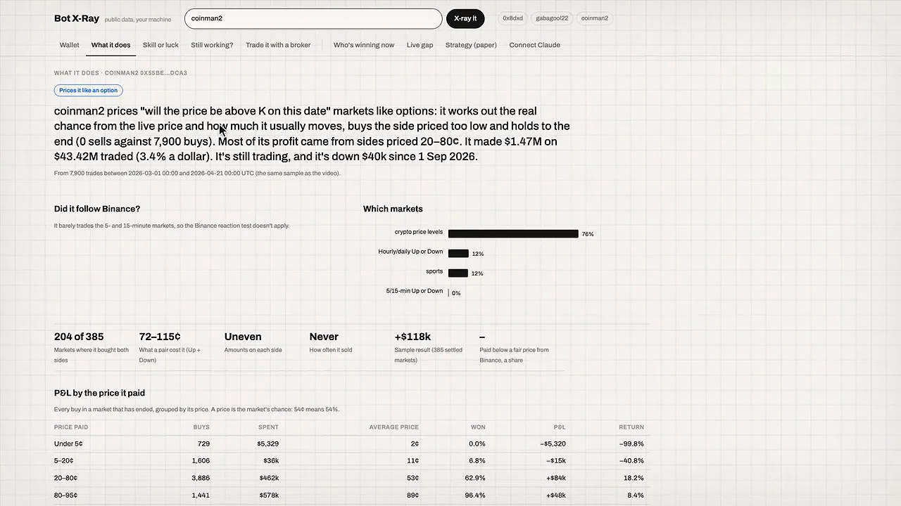
같은 화면 아래쪽의 '산 가격별 손익' 표를 옮기면 이래요. 수익 대부분이 20~80센트 구간에서 나왔어요.
| 산 가격 | 매수 횟수 | 평균 가격 | 이긴 비율 | 손익 | 수익률 |
|---|---|---|---|---|---|
| 5센트 미만 | 729 | 2¢ | 0.0% | −5,320달러 | −99.8% |
| 5~20센트 | 1,606 | 11¢ | 6.8% | −1만 5천 달러 | −40.8% |
| 20~80센트 | 3,886 | 53¢ | 62.9% | +8만 4천 달러 | +18.2% |
| 80~95센트 | 1,441 | 89¢ | 96.4% | +4만 8천 달러 | +8.4% |
아주 싼 표는 거의 다 졌어요. 이 봇이 돈을 번 곳은 시장이 반반에 가깝게 본 구간이에요.
표 가격이 곧 확률이에요
폴리마켓에서 표 가격은 시장이 매긴 확률과 같아요. 50센트짜리 표는 시장이 그 일이 일어날 확률을 50대 50으로 본다는 뜻이에요. 맞으면 1달러를 받으니, 50센트를 넣고 맞히면 돈이 두 배가 돼요.
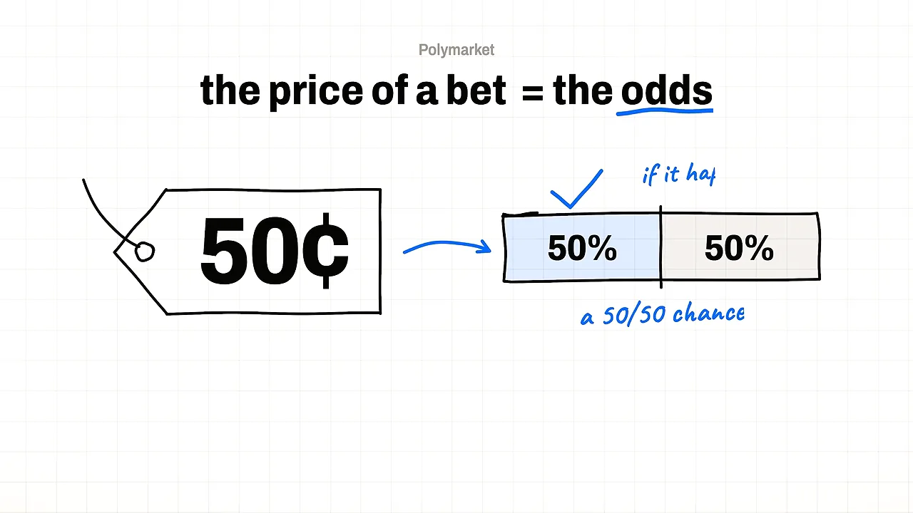
coinman2는 평균 53센트에 샀어요. 시장은 그 표들이 53% 확률로 이긴다고 본 셈이에요. 그런데 실제로는 63%를 이겼어요. 위 표의 20~80센트 줄(평균 53센트, 62.9%)과 같은 숫자예요.
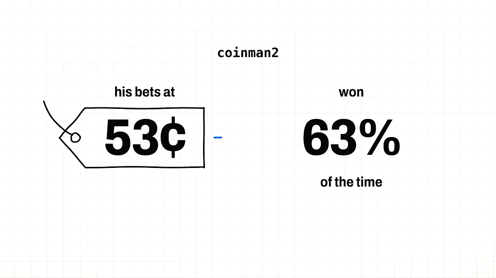
아래 화면은 이 차이를 막대 두 개로 보여 줘요. 위쪽 막대가 시장이 보는 확률(50:50), 아래쪽이 coinman2가 실제로 이긴 비율(63%)이에요. 파란 동그라미 친 부분, 두 막대가 어긋나는 틈이 이 봇의 수익이에요.
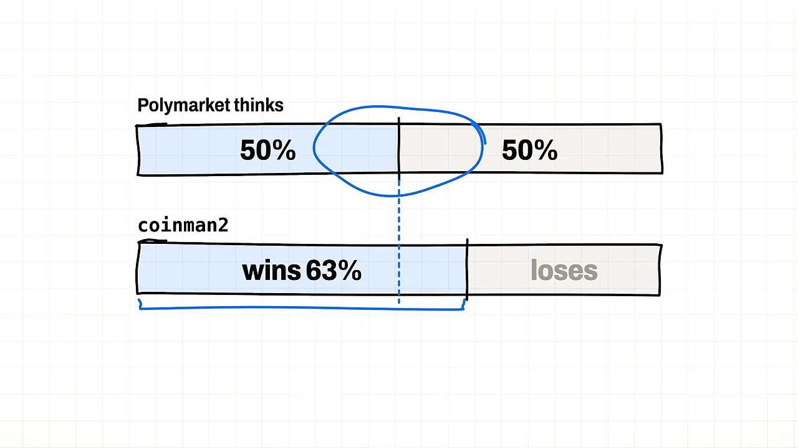
한 장당 평균 손익 0센트
산 돈 대비 0%
- 가격 50센트, 이긴 비율 50%로 두어 보세요. 시장 확률과 실제 확률이 같으면 평균 손익이 0이에요.
- 영상의 coinman2 숫자(53센트, 63%)로 돌려 보세요. 한 장에 약 10센트, 산 돈의 약 19%가 남아요. 표의 20~80센트 줄 수익률 18.2%와 거의 같아요.
- 가격 11센트, 이긴 비율 7%로 바꿔 보세요. 표의 5~20센트 줄처럼 싸게 사도 크게 잃어요.
수수료는 넣지 않은 계산이에요. 이긴 표는 1달러, 진 표는 0달러를 받는다는 규칙만 써요.
은행이 50년 동안 써 온 수학
그럼 이 봇은 시장 가격이 틀렸다는 걸 어떻게 알까요? 이더리움의 지금 가격과 평소 움직이는 폭, 즉 변동성을 넣어, 그 가격을 넘거나 못 넘을 '진짜 확률'을 계산해요. 발표자는 여기서 익숙한 것을 알아봤어요. 바로 옵션 가격 결정이에요. 아래 화면 왼쪽의 N(d) 수식, 가운데 은행 건물과 '50 years' 메모가 그 뜻이에요. 은행들이 50년 동안 써 온 같은 수학을 예/아니요 질문에 겨눈 거예요.
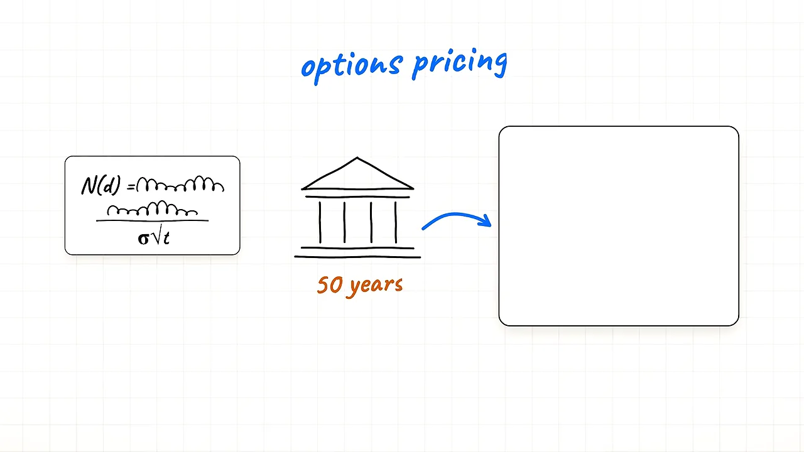
실력이고, 아직 돌아가요
gabagool22와 0x8dxd는 시차라는 허점이 있어야 돌아갔고, 폴리마켓은 설정 하나로 둘 다 막았어요. coinman2는 그런 허점에 기대지 않아서 설정이 바뀌어도 살아남았어요. 세 왕 중 지금도 거래하는 건 이 봇뿐이에요.
그렇다고 늘 버는 건 아니에요. 아래 화면처럼 하루에 14만 5,691달러를 잃은 날도 있었어요. 발표자는 이 봇이 9월부터 계속 손실을 내고 있다고도 말해요. Bot X-Ray 요약에도 '2026년 9월 1일 이후 4만 달러 손실'이라고 적혀 있어요.
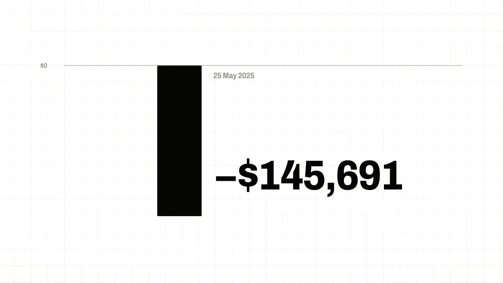
폴리마켓 밖으로 옮기는 변환기와 운 거르기
coinman2의 전략을 직접 시험해 보려던 발표자는 또 벽에 부딪혀요. 영국에서는 폴리마켓을 쓸 수 없거든요. 그래서 거꾸로 읽어 낸 전략을 일반 거래소에서 쓸 수 있게 옮기는 '변환기'를 Bot X-Ray에 붙였어요.
폴리마켓 내기를 일반 거래로 옮기기
'이더리움이 정해진 날까지 어떤 가격을 넘을까'라는 내기는 옵션 스프레드와 거의 같은 구조예요. 같은 이더리움 시장에서 옵션 두 개를 조합하면 비슷한 거래를 만들 수 있고, 이런 거래는 일반 증권사에서도 할 수 있어요. 미국에는 규제를 받는 거래소 Kalshi가 있어서 같은 종류의 시장을 열어요.
아래 '증권사로 거래하기' 탭에 옮길 곳 다섯 가지가 카드로 나와요. Options(옵션 거래 증권사)와 Kalshi는 '이미 들어 있고 모의로 돌아간다(Built in, runs on paper)', Futures(선물)는 'Claude가 만들어 준다', Crypto exchange(암호화폐 거래소)와 옵션이 없는 주식 증권사는 '변환 안 됨'이에요. 아래 'What's lost in the conversion'에는 옮기면서 잃는 것도 적어 놨어요. Kalshi는 미국 거주자와 Kalshi가 받아 주는 나라만 쓸 수 있다는 점이 그중 하나예요.
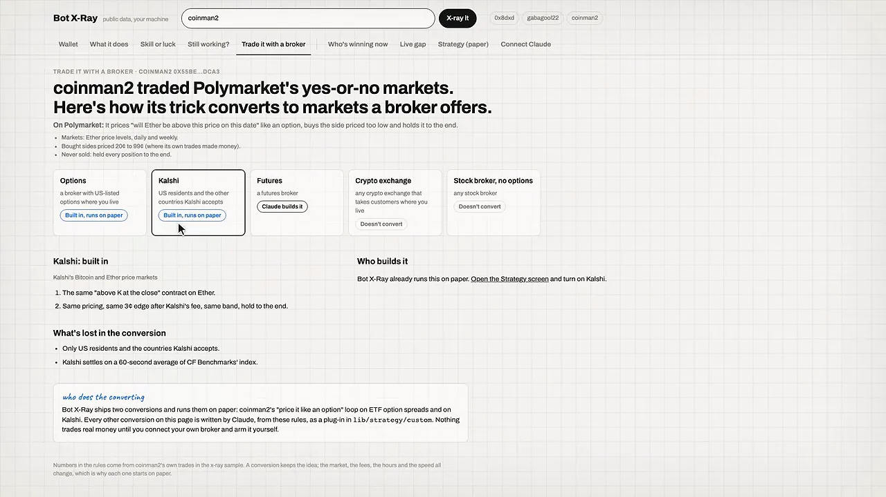
5분마다 도는 모의 거래
Bot X-Ray는 coinman2의 방식을 변환기에 넣고 5분마다 반복해요. 아래 '전략(모의)' 탭 제목이 그 방식을 한 줄로 요약해요. '옵션처럼 값을 매기고, 싼 쪽을 사서, 끝까지 들고 간다.' 체크박스를 보면 Kalshi와 ETF(Exchange-Traded Fund) 옵션을 5분마다 훑고, 한 번에 25달러씩 걸어요.
새 전략이라 실제 돈이 아니라 페이퍼 트레이딩으로 시작해요. 발표자는 녹화한 날 이 루프를 돌렸더니 하루 손실 한도에 걸렸다고 솔직하게 말해요. 화면 가운데 'Paper P&L −$107'이 그 숫자예요. 'Last scan' 아래에도 '오늘 모의 손실 −107.25달러, 하루 한도 100달러를 넘어 내일까지 새 거래 없음'이라고 적혀 있어요. 실제 돈이 아니라 모의로 시작하는 이유가 바로 이거예요.
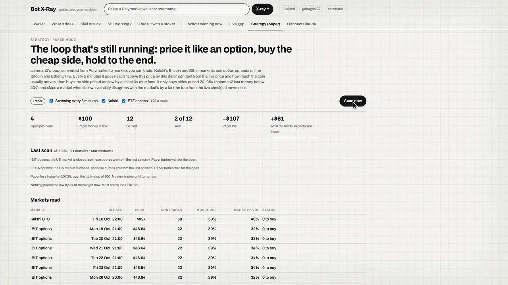
운을 걸러 내는 필터
사흘 동안 세 왕만 들여다보던 발표자는 리더보드에 다른 봇도 많다는 걸 깨달아요. 그런데 금세 그중 절반은 그냥 운일 수 있다는 것도 알게 돼요. 운을 따라 하면 안 되니, 각 봇의 실적을 동전 던지기와 비교하는 필터를 넣었어요.
아래 '지금 누가 이기나' 탭이 그 결과예요. 이번 달 암호화폐로 가장 많이 번 15개 지갑을 나열하고, 'SKILL OR LUCK' 열에 판정을 붙여요. 파란 손글씨 요약이 '15개 중 7개가 운으로 설명할 수 없는 우위를 보인다'예요. 1위 Papeasy는 이번 달 122만 달러를 벌었지만 판정은 'Could be luck(운일 수 있음)'이에요.
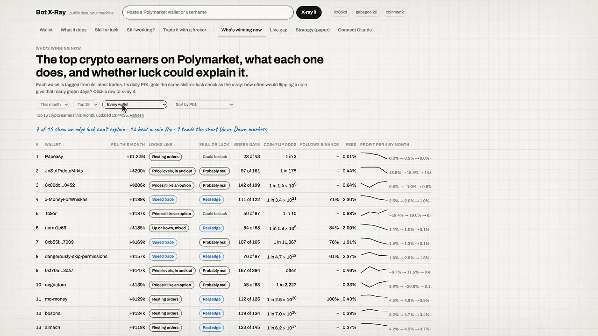
아직 통하는 속도 봇, dangerously-skip-permissions
필터를 통과한 일곱 개 중 발표자는 처음 보는 봇 하나를 골랐어요. 이름은 'dangerously-skip-permissions'예요. Claude를 터미널에서 써 본 사람이면 웃을 이름이라고 발표자는 말해요. 내부자 농담 같은 이름이에요.
0x8dxd와 같은 속도 봇이에요
Bot X-Ray의 '무엇을 하나' 탭 첫 줄이 '속도 봇이고, 아무것도 예측하지 않는다'예요. 바이낸스에서 비트코인이 움직인 뒤 10초 안에 산 것의 67%가 그 움직임과 같은 쪽이었어요. 'Did it follow Binance?' 막대를 보면 움직인 뒤 2초 안에는 100%, 4초 안에는 79%, 10초 안에는 67%예요. 파란 손글씨는 '시차를 거래한다(it trades the lag)'예요. 오른쪽 막대에서 이 봇은 5분·15분 오르내림 시장만 100% 거래해요.
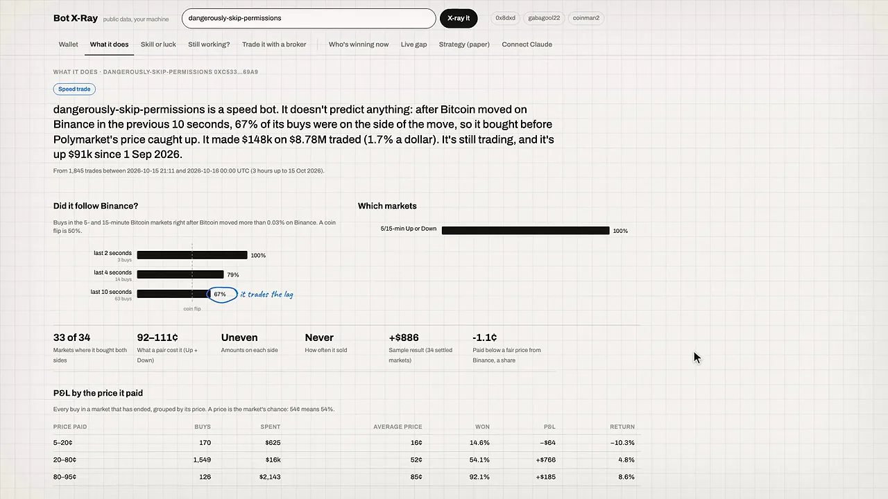
0x8dxd를 쓰러뜨린 것과 같은 방식인데, 이 봇은 아직 거래하고 있고 아직 벌어요. 어딘가 다른 점이 있다는 뜻이지만, 그게 무엇인지는 영상이 밝히지 않아요.
실력이고, 아직 벌지만 줄고 있어요
실력·운 판정에서 이 봇은 87일 중 76일 수익을 냈어요. 도구의 판정은 'A real edge', 진짜 우위예요. 다만 같은 화면에 확률이 두 번 나와요. 맨 위 큰 숫자는 '1 in 6.9 × 1010', 아래 문장은 'about once in 4.7 × 1012 tries'예요. 어느 쪽이든 운으로 보기 어려운 수준이지만, 도구 안에서도 숫자가 하나로 맞지 않는다는 점은 알아 둘 만해요.
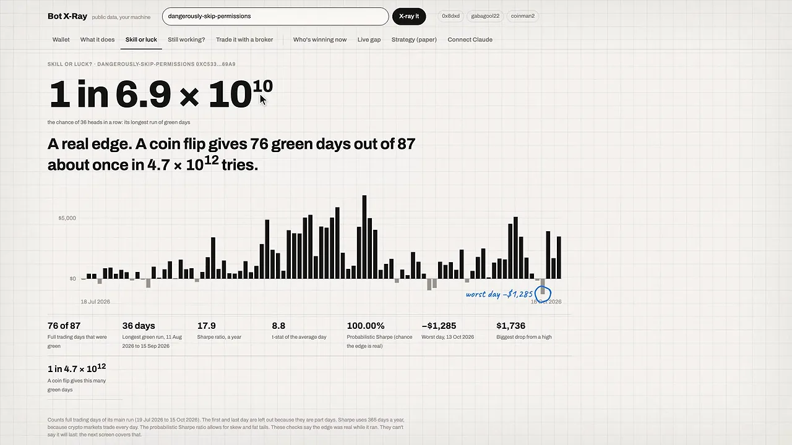
'아직 통하나' 탭은 좋은 소식과 나쁜 소식을 함께 보여 줘요. 아직 거래 중이지만, 1달러를 거래할 때 남는 수익이 두 달 연속 떨어졌어요. 8월 2.9%, 9월 1.5%, 10월 1.2%예요. 아래 'Fees against profit' 막대를 보면 수수료 전 수익이 31만 5천 달러인데, 그중 20만 8천 달러를 수수료로 냈어요. 파란 손글씨가 '수수료가 66%를 가져갔다'예요. 발표자는 이걸 '번 돈의 3분의 2를 수수료가 먹었다'고 말해요.
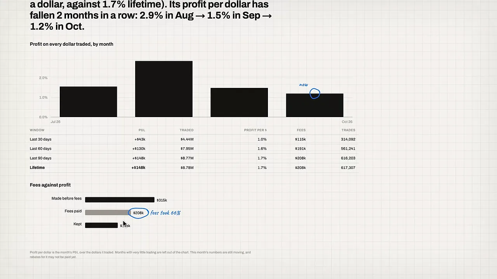
네 봇을 세 질문으로 정리하면
| 봇 | 무엇을 하나요 | 실력인가요, 운인가요 | 지금도 통하나요 |
|---|---|---|---|
| gabagool22 | Up과 Down을 합쳐 1달러보다 싸게 사요 | 실력 · 113일 연속 수익 | 아니요 · 2월 21일 멈춤 |
| 0x8dxd | 바이낸스가 움직이면 폴리마켓에서 먼저 사요 | 실력 · 10초 안 같은 방향 79% | 아니요 · 3월 25일 멈춤 |
| coinman2 | 옵션 수학으로 싼 쪽을 사서 끝까지 들고 가요 | 실력 · 53센트에 사서 63% 승리 | 그래요 · 다만 9월 이후 손실 |
| dangerously-skip-permissions | 0x8dxd와 같은 속도 거래예요 | 실력 · 87일 중 76일 수익 | 그래요 · 수익률 하락, 수수료 66% |
정리하면, 거래소의 허점에 기댄 전략은 설정 한 번에 사라졌어요. 속도 전략은 아직 숨이 붙어 있지만 수수료에 깎이고 있어요. 남은 건 시장 가격과 진짜 확률의 차이를 계산하는 쪽이에요.